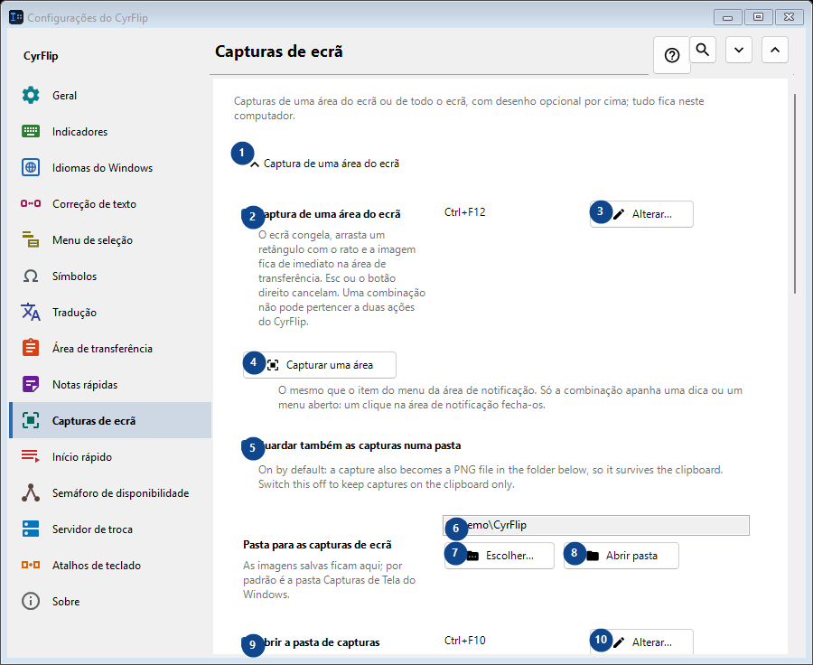
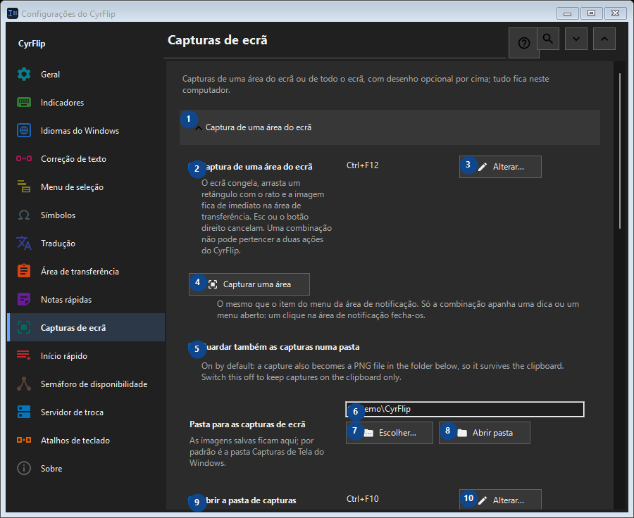

Capturas de ecrã
Para que serve
Capturas de uma área do ecrã ou de todo o ecrã, com desenho opcional por cima; tudo fica neste computador.


Ordem de utilização
As definições são aplicadas de imediato. Não existe uma ordem obrigatória; use os grupos abaixo.
Elementos
1. Captura de uma área do ecrã
Use este comando para a ação indicada. Leia qualquer confirmação antes de aceitar.
Os seus atalhos2. Captura de uma área do ecrã
O ecrã congela, arrasta um retângulo com o rato e a imagem fica de imediato na área de transferência. Esc ou o botão direito cancelam. Uma combinação não pode pertencer a duas ações do CyrFlip.
Os seus atalhos3. Alterar - Captura de uma área do ecrã
Use este comando para a ação indicada. Leia qualquer confirmação antes de aceitar.
Os seus atalhos4. Capturar uma área
O mesmo que o item do menu da área de notificação. Só a combinação apanha uma dica ou um menu aberto: um clique na área de notificação fecha-os.
Os seus atalhos5. Guardar também as capturas numa pasta
On by default: a capture also becomes a PNG file in the folder below, so it survives the clipboard. Switch this off to keep captures on the clipboard only.
Os seus atalhos6. Pasta para as capturas de ecrã
Escolha ou introduza o valor da etiqueta adjacente. Verifique-o antes de continuar.
Os seus atalhos7. Escolher - Pasta para as capturas de ecrã
Use este comando para a ação indicada. Leia qualquer confirmação antes de aceitar.
Os seus atalhos8. Abrir pasta - Pasta para as capturas de ecrã
Use este comando para a ação indicada. Leia qualquer confirmação antes de aceitar.
Os seus atalhos9. Abrir a pasta de capturas
Funciona enquanto o guardar de capturas numa pasta estiver ativado. Abre a pasta onde o CyrFlip guarda as capturas. Uma combinação não pode ser dada a duas ações do CyrFlip.
Os seus atalhos10. Alterar - Abrir a pasta de capturas
Use este comando para a ação indicada. Leia qualquer confirmação antes de aceitar.
Os seus atalhos11. Captura de todo o ecrã
Use este comando para a ação indicada. Leia qualquer confirmação antes de aceitar.
Os seus atalhos12. Captura de todo o ecrã
Uma pressão: todos os ecrãs são capturados como uma só imagem, directamente para a área de transferência. Nada congela no ecrã.
Os seus atalhos13. Alterar - Captura de todo o ecrã
Use este comando para a ação indicada. Leia qualquer confirmação antes de aceitar.
Os seus atalhos14. Capturar todo o ecrã
O mesmo que o item do menu da área de notificação "Captura de todo o ecrã".
Os seus atalhos15. Desenhar sobre as capturas
Use este comando para a ação indicada. Leia qualquer confirmação antes de aceitar.
Os seus atalhos16. Desenhar sobre as capturas
Depois da captura, a imagem congelada fica no ecrã: desenhe óvais, retângulos, linhas e setas.
Os seus atalhos17. Captura de uma área com desenho
Capture a selected region and draw on it. One chord cannot belong to two CyrFlip actions.
Os seus atalhos18. Alterar - Captura de uma área com desenho
Use este comando para a ação indicada. Leia qualquer confirmação antes de aceitar.
Os seus atalhos19. Captura de todo o ecrã com desenho
Capture every display as one picture and draw on it. One chord cannot belong to two CyrFlip actions.
Os seus atalhos20. Alterar - Captura de todo o ecrã com desenho
Use este comando para a ação indicada. Leia qualquer confirmação antes de aceitar.
Os seus atalhos21. Capturar uma área e desenhar
O mesmo que a combinação "captura de uma área com desenho".
Os seus atalhos22. Capturar todo o ecrã e desenhar
O mesmo que a combinação "captura de todo o ecrã com desenho".
Os seus atalhos